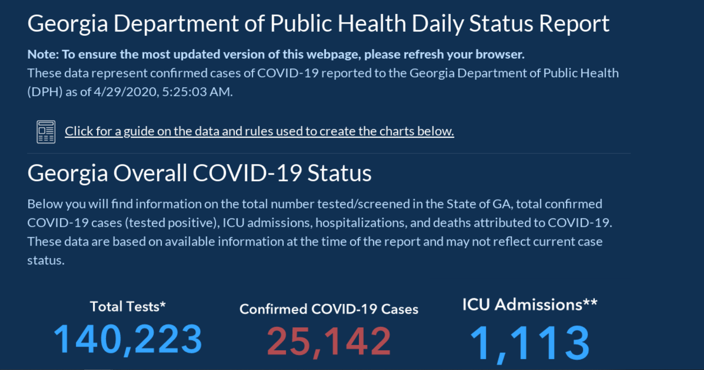
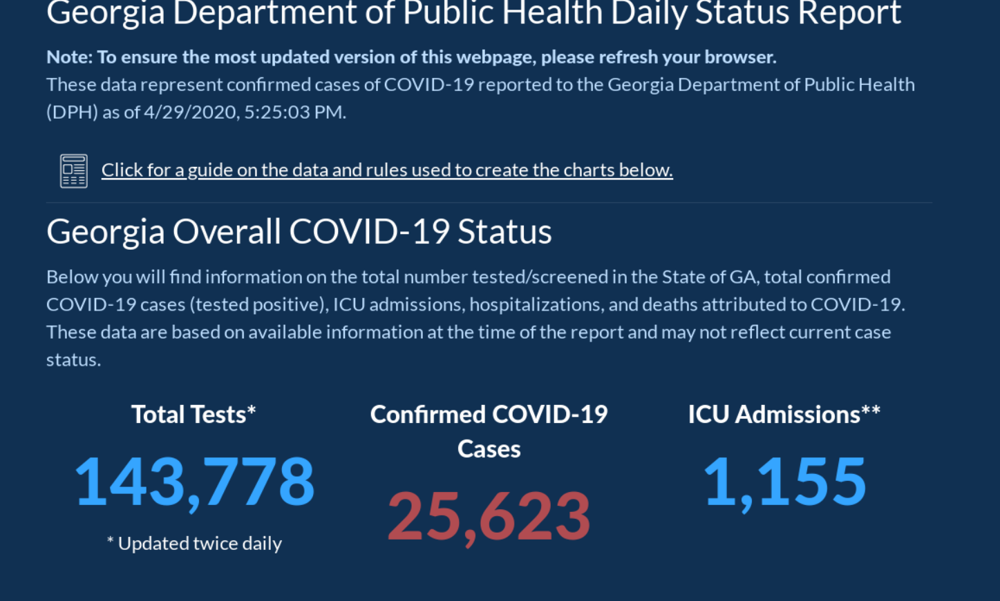
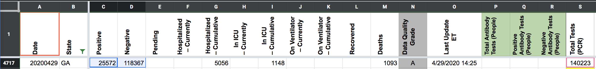
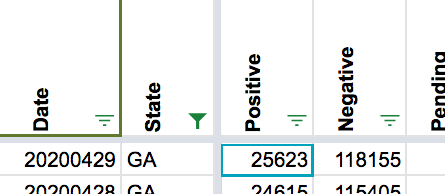

[GA] Pub Shift missed a late testing update 4/29
Issue number 659
the-daniel-lin opened this issue on July 23, 2020 at 9:44 am
Labels Historical Data not stale Backfill
State or US: GA
Describe the problem GA updated their testing a few hours late, causing us to have a lower testing value and an artificially high postivity %.
Link to data source Screenshot from 4/29 morning: 
Screenshot from after the pub shift: 
This issue has been automatically marked as stale because it has not had recent activity. It will be closed if no further activity occurs. Thank you for your contributions!
BEFORE 
AFTER 